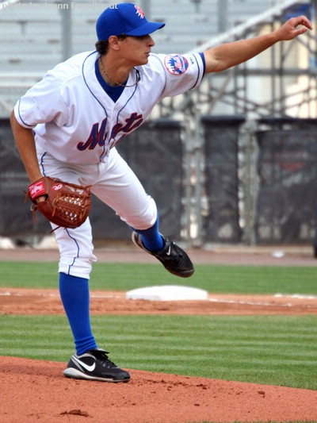
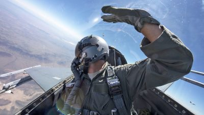
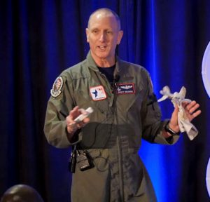

The Fighter Pilot Guide to Pitching- Emotional Intelligence
By the Pilot and the Pitcher. Lt. Col. Scott “Hurler” Weaver and Coach Eric “Lefty” Niesen
Emotional intelligence, or the capacity to control one’s emotions prior to flying into “bad guy” territory, is not learned in one day. It takes years. It takes practice. It takes maturity. Emotional intelligence is the ability to self-manage. Being self-aware allows a person to have more control over their emotions, thereby creating a positive impact on themselves and the people around them. By guiding our own thinking and behavior, it’s more likely we can perform at a high level. Being “in the zone” is something every elite athlete has felt at one time or another. Knowing your strengths, but more importantly, knowing your weaknesses is just as important whether you’re climbing the bump or heading into combat.

Eric. I was drafted in 2007 out of Wake Forest University by the New York Mets – a childhood dream of mine following a decade plus of hard work. Throughout high school and college, I was also told I was too small to compete at the next level. Now I had the chance to prove those “Nah-sayers” wrong. In my mind I had the tools, but did I have the emotional intelligence? Was I mentally prepared for the next level?
The next few weeks were a whirlwind of emotion. Your collegiate career ends coupled with the excitement of getting drafted. Now I was off to my first professional team, which sent me directly to Short-Season A ball in Brooklyn, NY. You would think the hardest part of that journey was dealing with the big city. In truth, the big city was just the beginning of the adventure. You are away from home and away from people you trust. You’re thrust into a new environment – where every peer around you either wants your job, or wants to get ahead of you. The difficult thing is the emotional toll of everything new – new coaches, new players, new city, new sleeping arrangements, long bus rides, distance from loved ones and the constant pressure to succeed. It was plain to me that if I was going to succeed at this level and higher, I had to develop a system to handle the mental side of the equation.
Scott. I started flying in the USAF in 1984 when I was selected to be a T-38 First Assignment Instructor Pilot (FAIP). In 1987, I transitioned to the F-16C. In all, I had twelve years of endless training to get ready for my first “combat” mission. How does 12 years of training prepare you for your first combat mission? How does that 12 years alter your level of emotional intelligence going into combat? Let me give you a couple of examples.

My first example recalls the feeling I had during the day of that first mission. It was reminiscent of my first start as a pitcher. I was pitching for Colorado University as a freshman against the University of Oklahoma, a nationally ranked team at the time. I experienced a restless night of sleep, up early, with stomach and bowels turning, and an early arrival at the ballpark. Almost the exact same feelings I had at the start of this mission. Because there was a break in the action in Iraq, bullets and missiles weren’t flying at the time. But the sense of readiness, preparedness, and emotional intelligence were similar. In both cases, I battled nerves but felt secure in the knowledge that I had been training for these missions my entire life.
Another more critical example of emotional intelligence during my flying days had to do with my first combat mission. It was in 1996 over Southern Iraq, flying out of Al Jabar, Kuwait. I was deployed with 8 of my squadron mates and a maintenance, intelligence and weapons staff of over 50 personnel. Our mission was to replace an active duty A-10 unit that had been stationed in the area for over a year. Our mission was primarily air-to-ground, carrying TV-guided Maverick missiles. At times, we would switch to a dedicated air-to-air role as we were ordered to look for “high fast flyers” – the Russian made Mig-29A coming out of Bagdad. Their mission was to defect or do serious damage to our High-Value Assets (HVA) like tankers or AWACS aircraft. Our mission was critical. We were mentally tough, aware of ourselves, motivated and emotionally intelligent.
Emotional Intelligence Learned. In the same way a professional pitcher has trained much of his young life to climb the mound and compete, ignoring the noise around him and focusing on the mission, so were we focused and confident. Two occupations. Two examples of real-world situations. Having the mental toughness, emotional intelligence, the body language, confidence and the attitude to go out and compete – the feeling is exactly the same, whether you’re strapping on an F-16C loaded to the gills with weapons or meeting your highly anticipated competitor in a game where a large portion of the team’s success depends on your skills and competence.
Whether it’s bombs on target, or pounding the strike zone, having a process and experience dealing with factors outside of yourself, learning how to control your inner thoughts, is key to your success.
Despite the significance of emotional intelligence, its nature is intangible. It’s hard to know exactly what qualities you have, or a potential colleague has, unless they are tested. Experience and practice are key to developing a high emotional intelligence.
Strategic Combination.

The Fighter Pilot’s mental view of pitching comes from Lt. Col. Scott “Hurler” Weaver. The Coach’s perspective on the physical side to pitching comes from Coach Eric Niesen, pitching coach at Georgetown University. Learn more about The Fighter Pilot’s Guide to Pitching.
About Me

Scott Weaver is a public speaker, author, pilot, aviation historian and retired Lt. Col. USAF.